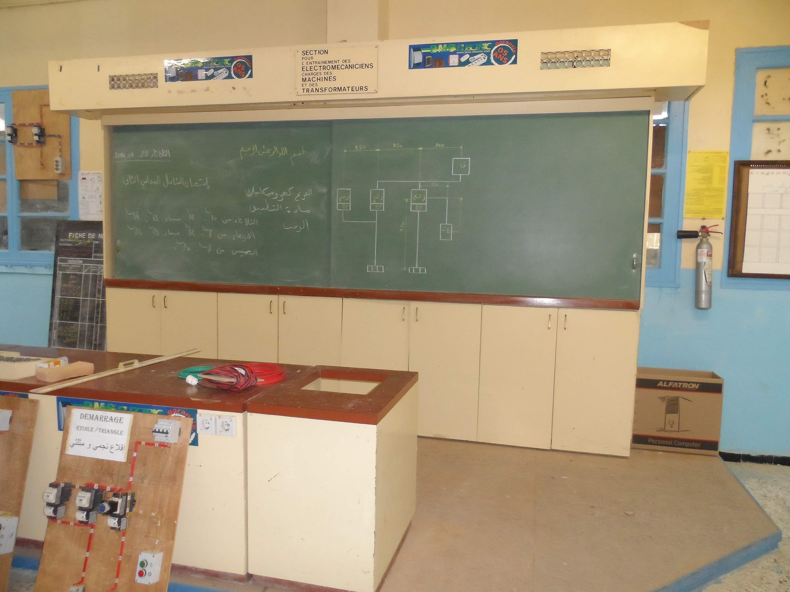
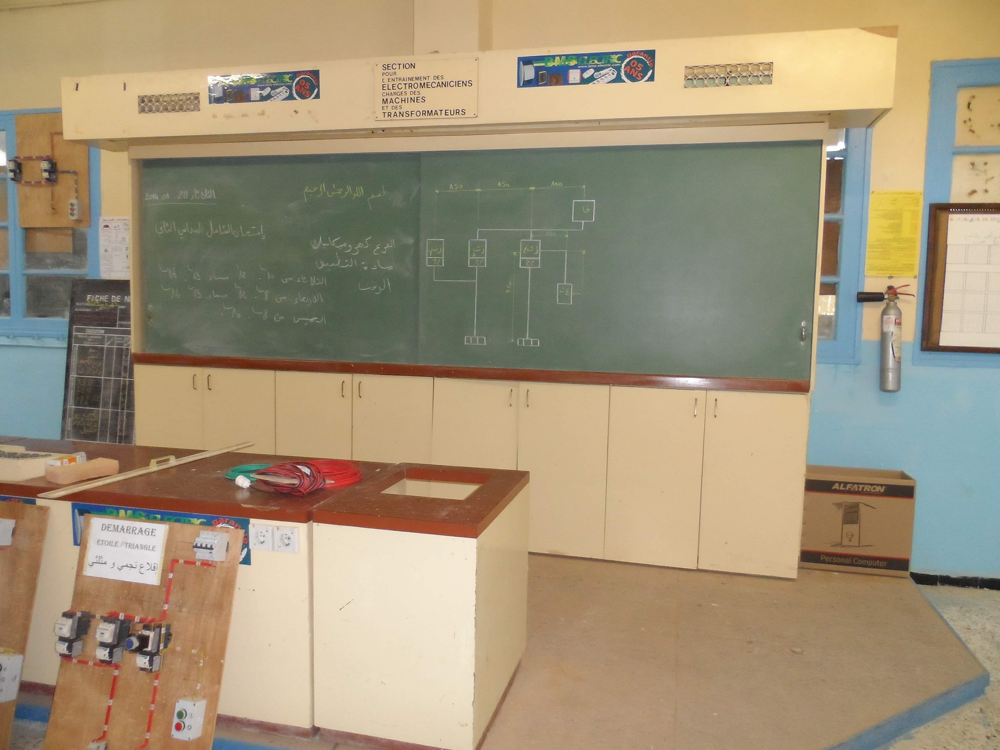

- El Affroun

 

حسب المعلومات التاريخية المتداولة فإن مركز التكوين المهني بالعفرون بني سنة 1947 ، بعد الحرب العالمية الثانية لغرض تكوين يد عاملة مؤهلة في مهن البناء من أجل إعادة بناء المدن الفرنسية التي دمرتها القوات الألمانية خلال الحرب، حينما وجدت فرنسا نفسها في أشد الحاجة لليد العاملة المؤهلة تأهيلا سريعا و نظرا لهذا النقص الكبير و الملح كان المتخرجون ينقلون مباشرة إلى فرنسا كيد عاملة رخيصة، كما أنه يعتبر أول مركز للتكوين المهني في الجزائر لأن قبل بنائه كان التكوين تتكفل به البعثات المسيحية (الأباء و الأخوات البيض) .
بني المركز في مساحة عشر هكتارات على هضبة مرتفعة مما جعله مطلا على منظر بانورامي لا مثيل له، فإن أنت وقفت في أعلى نقطة فيه لا يحد بصرك إلا الأفق البعيد فيمتد أمامك من الشمال سهل متيجة بمزارعه الشاسعة الخضراء و تحت أقدامك تقبع مدينة العفرون و من الجنوب سفوج جبال النحاوة و سيدي رابح حتى تمزقيدة و الشريعة إلى الشرق و من الشرق يصل بصرك إلى مشارف البليدة و من الغرب تقابلك هضبة سيدي عبد القادر و خلفها جبل سيدي موحا بن عيشة .
ثم بنيت بعده مراكز الحراش و بوليو و القبة و كذلك بني مركز البليدة سنة 1952 و الذي كان ملحقا لمركز العفرون .
تاريخ المركز لم يكن مليئا بالمتخرجين بشهادات المهن و الحرف و حسب بل كان أيضا يتخرج منه أبطال بشهادات في سبيل حرية الجزائر حيث أن البطل الشهيد سي امحمد بوقرة قائد الولاية الرابعة قبل اندلاع الثورة التحريرية كان قد اشتغل مكونا بالمركز(بعض المصادر لا تذكر مركز العفرون و إنما تذكر البليدة و لكن إذا دققنا في الأمر فإن مركز البليدة وجد بعد سنة 1952 و كان ملحقا لمركز العفرون) و كذلك استشهاد ما لا يقل عن إثنى عشر متكونا اغتالهم الجيش الفرنسي خلف أسوار المركز، اغلب الظن انهم اغتيلوا كلهم في المقبرة الحالية و دفنوا جماعيا و لا تعرف هويتهم و لا مكان دفنهم بعد أن اتهموا بالمشاركة في عمليات فدائية، بالإضافة إلى العديد من المتخرجين من المركز الذين التحقوا بصفوف الثورة التحريرية.
بعد الإستقلال تمت إعادة فتحه بإضافة بعض المهن و التخصصات مثل الكهرباء و مهن الإنشاءات الميكانيكية و المعدنية، ثم توسع في بداية السبعينات بإدخال مهن و تخصصات أخرى مثل تخصصات الإدارة و التسيير(المحاسبة و السكريتاريا) و النجارة المعمارية كما تم بالتعاون مع جمهورية ألمانيا الشرقية إدخال تخصصات جديدة لأول مرة في الجزائر و هي تخصصات الفنون المطبعية و تم بناء ورشات جديدة لإستقطاب الوافدين الجدد و بناء مراقد جديدة و مطعم بسعة أكبر، كما كان المركز و حتى نهاية السبعينات و نظرا لإنعدام المراكز التكوينية في تلك الفترة يشرف على عدة ملحقات و فروع في مختلف أنحاء الوطن حيث كان يشرف على فروع تصل حتى مدن شرشال و سيدي غيلاس و الشلف غربا و الجلفة و الأغواط جنوبا و حتى تيزي وزو شرقا و في بداية الثمانينات ضمت إلى المركز ملحقة و التي كانت تهتم بحماية الأطفال المعوزين بعد أن كانت تأوي فئة أبناء الشهداء مباشرة بعد الاستقلال( سنعود للملحقة بموضوع آخر أكثر تفصيلا).
من الزمن فللمركز تاريخ مليء بالتضحيات و لا يمكن ذكر من مروا على هذا المركز من مكونين و اطارات و مسيرين و عمال و أيضا متربصين و ما انجزوه سواء داخل المركز أو خارجه و ما قدموه لتطوير الإقتصاد الوطني حين كانت الجزائر تفتقر لليد العاملة المؤهلة و قد افنوا حياتهم في تكوين الأجيال.
لا بد أن نذكر مرور الكاتب و الأديب الكبير كاتب ياسين في بداية السبعينيات و إقامته بالمركز حيث كان تحت الإقامة الجبرية و اثناءها تفرغ للكتابة و كان يقضي كثيرا من وقته في مقهى الثورة تحت شجرة الزيتون مع شيوخ الحي في حلقة يجلسون على الحصير و كان يخوض معهم في الحديث عن عادات و تقاليد و تاريخ المنطقة.
كان المركز في سبعينيات و ثمانينيات القرن الماضي يستقطب اكبر عدد من المتربصين من مختلف مناطق الوطن ، بل من عدة بلدان افريقية و عربية. و قد أعطته اختصاصات الفنون المطبعية طابعا وطنيا و قاريا إلى جانب اختصاصات البناء و هذا ما يفسر وجود عدد كبير من سكان العفرون و حي بني مويمن خاصة يمتهنون و يتقنون بشكل جيد مهن البناء حتى و إن لم يتكونوا كلهم داخل المركز و إنما تعلموا على يد آخرين أي إشعاع المركز انتشر و تجذر في المنطقة و نال أهل العفرون في مهن البناء شهرة كبيرة في كل ولايات الوطن .
بالنسبة لعدد المتخرجين من المركز و عدد التخصصات و المهن فقد حاولت سنة 2013 عندما كنت على رأس المركز أن أقوم بإحصائيات تتعلق بهذا الجانب و لكن لغياب أرشيف مسجل و منظم و نظرا لحرق جزء كبير منه تعذر إجراء إحصاء دقيق و لكن المحاولة أعطت نتائج تقريبية أي أن الأرقام الحقيقة اكبر مما وجدنا و تمثلت في ما يلي:
من سنة 1956 إلى سنة 1962 تخرج من المركز ما لا يقل عن ألف و مائتين متخرج في اختصاصات البناء Limousinerie و البناء الموسع Maçonnerie générale و البناء العام étendue Maçonnerieو الطلاء.
و على مدى الخمسين سنة من 1963 إلى 2013 تخرج من المركز ما لا يقل عن 20000 متخرج في أكثر من 53 مهنة و تخصص في نمط التكوين الإقامة فقط دون احتساب أنماط التكوين الأخرى و منها نمط التمهين.
عبد الوهاب حمدان
كسالي
وشاتي
عماري علي
بوسنة
بوهودة
بوشقيف احمد
عقيل جيلالي
خروبي طاهر
عامر محمد
محمد حسان محمد
بني المركز في مساحة عشر هكتارات على هضبة مرتفعة مما جعله مطلا على منظر بانورامي لا مثيل له، فإن أنت وقفت في أعلى نقطة فيه لا يحد بصرك إلا الأفق البعيد فيمتد أمامك من الشمال سهل متيجة بمزارعه الشاسعة الخضراء و تحت أقدامك تقبع مدينة العفرون و من الجنوب سفوج جبال النحاوة و سيدي رابح حتى تمزقيدة و الشريعة إلى الشرق و من الشرق يصل بصرك إلى مشارف البليدة و من الغرب تقابلك هضبة سيدي عبد القادر
و خلفها جبل سيدي موحا بن عيشة..
ثم بنيت بعده مراكز الحراش و بوليو و القبة و كذلك بني مركز البليدة سنة 1952 و الذي كان ملحقا لمركز العفرون تاريخ المركز لم يكن مليئا بالمتخرجين بشهادات المهن و الحرف و حسب بل كان أيضا يتخرج منه أبطال بشهادات في سبيل حرية الجزائر حيث أن البطل الشهيد سي امحمد بوقرة قائد الولاية الرابعة قبل اندلاع الثورة التحريرية كان قد اشتغل مكونا بالمركز(بعض المصادر لا تذكر مركز العفرون و إنما تذكر البليدة و لكن إذا دققنا في الأمر فإن مركز البليدة وجد بعد سنة 1952 و كان ملحقا لمركز العفرون) و كذلك استشهاد ما لا يقل عن إثنى عشر متكونا اغتالهم الجيش الفرنسي خلف أسوار المركز، اغلب الظن انهم اغتيلوا كلهم في المقبرة الحالية و دفنوا جماعيا و لا تعرف هويتهم و لا مكان دفنهم بعد أن اتهموا بالمشاركة في عمليات فدائية، بالإضافة إلى العديد من المتخرجين من المركز الذين التحقوا بصفوف الثورة التحريرية.